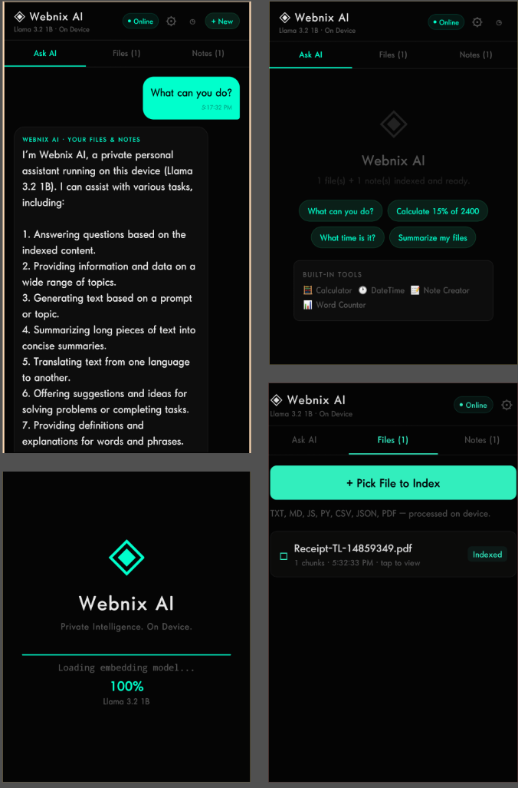

No tutorial wrappers. We engineer high-throughput FastAPI backends, enterprise DataHub MCP multi-agent crews, sub-second Groq LPU engines, offline on-device SLMs, and battle-tested Next.js & Mobile platforms.
Inspect live trace outputs and validated JSON payloads from our crypto intelligence, on-device mobile AI, and DataHub 5-agent MCP pipeline.
Spot ETF volume influx confirmed. Live dashboard deployed at onchainedge.vercel.app.
{
"system": "sososignal-v2",
"engine": "llama3-70b-8192-groq",
"latency_ms": 268,
"live_demo": "https://onchainedge.vercel.app/",
"etf_net_inflow_usd": 434000000,
"orderbook_delta": "+6.14%",
"signal": {
"action": "STRONG_ACCUMULATION",
"confidence": 0.926
}
}
Explore source code and production deployments across our multi-agent pipelines, on-device mobile AI, and Next.js applications.
A fully air-gapped, offline AI assistant running natively on Android using Tether's QVAC SDK v0.19.1. Executes Llama 3.2 1B Instruct (Q4_0) and local GTE-Large embeddings directly on mid-range Snapdragon CPUs with private on-device RAG indexing. Zero network required.

Five-agent autonomous pipeline (Investigator, Analyst, Strategist, Regulatory, Codeband) built for "Build with DataHub: The Agent Hackathon". Reads DataHub metadata graphs via Model Context Protocol (MCP), detects governance gaps (unowned datasets, stale descriptions, missing compliance tags), and writes validated repairs back through `mcp-server-datahub` GraphQL execution.
AI-powered financial signal terminal using SoSoValue market data + Groq Llama-3. Merges live spot ETF inflows, Fear & Greed telemetry, and order-book momentum to generate sub-second BUY/SELL/HOLD algorithmic signals.
Autonomous GTM & market intelligence multi-agent network built with FastAPI and Python. Orchestrates distributed scrapers, extracts hiring and buyer intent signals, and synthesizes structured lead batches via free AI/ML APIs.
AI-powered vendor risk intelligence platform for B2B enterprises built for H0: Hack the Zero Stack with Vercel and AWS Databases. Real-time risk scoring, Groq Llama-3.3-70B summaries, and live threshold alerts persisted across AWS DynamoDB.
Commercial salon platform & automated booking assistant powered by Gemini 3.6 Flash (serverless Edge runtime with Anthropic fallback). Dispatches confirmed appointments and leads directly to Google Sheets and WhatsApp workflows.
Production engineering across modern web frameworks, systems languages, native mobile apps, and enterprise AI automation.
Choose between confidential agency overflow delivery or dedicated principal engineering for venture-backed startups.
When your agency books complex Next.js, mobile app, FastAPI services, or AI automation projects beyond internal bandwidth, we step in as your silent engineering arm. Deliver production-ready code directly to your repositories under your branding.
High-cadence engineering for early-stage and funded startups. We take ownership of your product roadmap—from high-throughput FastAPI microservices and AI automation swarms to low-latency Groq backends and scalable Next.js apps.
Instant routing to our team. Click below to initiate direct conversation.